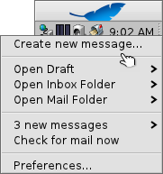

Português (Brazil)
Português (Brazil) Català
Català Deutsch
Deutsch English
English Español
Español Français
Français Italiano
Italiano Magyar
Magyar Polski
Polski Português
Português Română
Română Slovenčina
Slovenčina Suomi
Suomi Svenska
Svenska 中文 ［中文］
中文 ［中文］ Русский
Русский Українська
Українська 日本語
日本語| Índice |
|
Sistema de correio do Haiku Utilizando estados personalizados Utilizando consultas Mais dicas |
Ofinica: Gerenciando o Correio Eletrônico
Esta oficina dá uma geral de como gerenciar correo eletrônico no Haiku. Ela assume que os serviços de correio eletrônico estão corretamente configurados com as preferências de Correio Eletrônico que você esteja acostumado com as funcionalidades básicas do aplicativo Correio.
 Sistema de correio do Haiku
Sistema de correio do Haiku
Se vem ao Haiku a partir de outros sistemas operacionais, provavelmente está acostumado com aplicativos grandes como MS Outlook ou Mozilla Thunderbird. Você os configura inserindo todas as informações nos endereços de servidor de correio, etc., e eles utilizam seus próprios bancos de dados de contatos. Eles cuidam de enviar e buscar mensagens e guardá-las em algum grande arquivo especial.
Alterar seu cliente de correio eletrônico pode ser uma chatice com tantos exportar/importar e converter afora. Utilizar mais de um cliente paralelamente para verificar o que está disponível não deixa de ter algum incômodo.
O sistema de correio do Haiku é diferente. Ele desmembra em módulos menores separados.
Existe o mail_daemon que cuida da comunicação com seus servidores de correio. As preferências de Correio Eletrônico é o ponto central para configurar suas contas de correio eletrônico e quantas vezes eles são verificados, por exemplo.
Toda mensagem que é recuperada ou enviada é salva como um arquivo de correio eletrônico único, com seu cabeçalho de informação (como remetente, assunto, data) e estado (como Novo, Respondido, Enviado) em atributos BFS. Isto habilita pesquisar/filtrar com as consultas rápidas do Haiku.

Com cada correio eletrônico estando em um arquivo separado, vê-los torna-se tão fácil quanto navegar através de uma pasta (ou resultado de consulta) de imagens com Mostrar Imagem. Deixando a janela do Rastreador aberta, ver-se-á a seleção movimentando-se entre os arquivos ao usar o botão anterior/próximo para mover entre eles.
Como são arquivos independentes, utilizar outro visualizador que não o Correio do Haiku não causa qualquer problema.
Similarmente, criar uma nova mensagem resulta em apenas outro arquivo que é entregue ao mail_daemon que se encarrega de enviá-lo. O gerenciamento de contatos é cedido para o aplicativo Pessoas.
Em poucas palavras, onde outros clientes de correio fazem tudo, da comunicação com os servidores de correio à oferta de uma visualização de todas as suas mensagens e ferramentas para pesquisá-las e filtrá-las, o Haiku utiliza uma cadeia de ferramentas menores e gerenciamento geral de arquivos:
O mail_daemon busca/envia mensagens e os salva como arquivos normais.
Janelas do Rastreador e consultas para encontrar e exibir arquivos de correio eletrônico.
O aplicativo Correio para visualizar arquivos de correio eletrônico e criar novas mensagens deixando o gerenciamento de contatos no sistema inteiro para o aplicativo Pessoas.
Especialmente usar o Rastreador e consultas para gerenciar mensagens é uma ideia poderosa. A experiência que você ganha pode ser transferida para qualquer outro problema, como lidar com filmes. Sejam imagens, música, vídeo, contatos ou quaisquer outros documentos, utilizar o Rastreador está no centro de toda a gestão de arquivos.
Também, melhoramentos em quaisquer dessas áreas do sistema beneficiam não apenas o correio eletrônico, mas todos os aplicativos que fazem uso delas.
Utilizando estados personalizados
Quando navega através de suas mensagens recém-chegadas, pode-se querer voltar para algumas delas mais tarde para pensar sobre o assunto mais profundamente. Enquanto poderia utilizar o menu do Correio para mantê-las na sua consulta "Novas mensagens", as coisas tendem a se acumular desse jeito...
Uma solução é naturalmente apenas iniciar uma resposta e salvá-la como rascunho. Mas se não pretende escrever uma resposta e apenas quer reler a mensagem mais tarde, isto não é o ideal.

Melhor utilizar para criar um novo estado e utilizá-lo para categorizar sua mensagem. Por exemplo, poder-se-ia chamar o estado "Depois" e então consultá-lo quando encontrar mais tempo.
Ou utilizar diferentes estados para projetos específicos. Por exemplo, eu criei um estado "HUG" (para "Haiku user guide") sob o qual eu coleto toda mensagem que pode influenciar os conteúdos do guia do usuário, como mensagens de commit sobre mudanças no código que alteram ou introduzem alguma funcionalidade ou algo mais que eu sinto que possa melhorar o guia do usuário.
Em todo caso, tente manter o estado com o nome curto. Assim ele sempre ficará em uma coluna "Estado" com largura normal no Rastreador.
Não é preciso abrir uma mensagem com o aplicativo Correio para definir seu estado. Com os adicionais do Rastreador Marcar como Lida e Marcar como... pode-se selecionar alguns arquivos de correio eletrônico e definir seus estados de uma só vez.
Utilizando consultas
Certo, você especifica uma pasta para armazenar todas as suas mensagens, pode abrí-la e voilà, lá estão todas as suas mensagens. Mas progressivamente a pasta torna-se lotada e mostrar tudo tomará mais e mais tempo com milhares de arquivos e seus atributos sendo analisados e ordenados. Também, na maior parte do tempo você não realmente não liga pra mensagens de dois anos atrás dos príncipes nigerianos e seus problemas com herança...
Consultas, ao resgate!
Ao utilizar consultas, pode-se visualizar suas mensagens usando seta para baixo. Em verdade, o ícone da caixa de correio na Deskbar utiliza consultas.
O submenu faz uma pesquisa pelo estado "Rascunho", o qual é definido pelo Correio ao salvar uma mensagem.
e são apenas vínculos para pastas regulares (e não são muito úteis, na minha opinião).
O submenu é preenchido por uma consulta por mensagens com o estado "Novo" (a propósito, a mesma consulta é utilizada para mudar o ícone da caixa de correio para mostrar algumas cartas nela).
Pode-se adicionar também suas próprias consultas (ou pastas, aplicativos, scripts, etc.) àquele menu de contexto, colocando-os ou aos seus vínculos dentro de ~/config/settings/Mail/Menu Links.
Exemplos de consultas
Eis alguns exemplos de consultas úteis:
 Isto encontra todos as mensagens com o estado personalizado "Depois". |
 Isto encontra todas as mensagens dos últimos 2 dias. |
 Isto encontra todas as mensagens de Ingo Weinhold das últimas 2 semanas. |
 Isto encontra todas as postagens da lista de commit do Haiku das últimas 12 horas. |
Mais dicas
Se não salvar uma consulta como "Consulta" mas como "Modelo de consulta", ao chamá-la não abrir-se-á a janela de resultado, mas ao invés disso a janela Encontrar... Desse modo pode-se facilmente alterar a sequência de pesquisa para um assunto ou remetente, por exemplo, ou alterar um limite de tempo de "2 dias" para "3 dias".
Ativar "filtragem com auto-completar" nas preferências do Rastreador permite filtrar ainda mais rapidamente um resultado de consulta. Frequentemente, é bastante consultar por todas as mensagens dos últimos 3 dias e usar a filtragem com auto-completar a partir daí. A grande vantagem é não ser preciso especificar exatamente qual atributo procurar, pois todos os exibidos são considerados na filtragem.